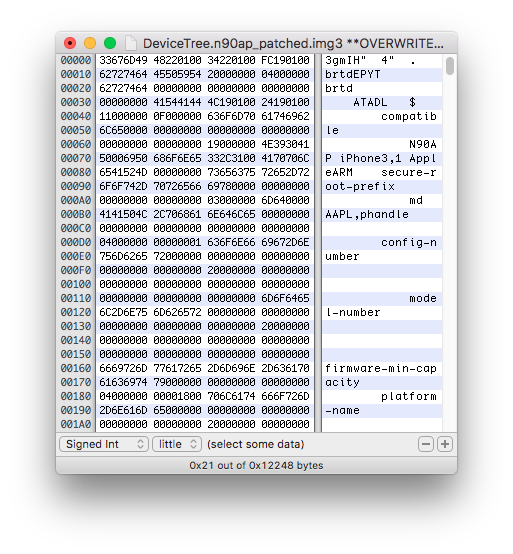
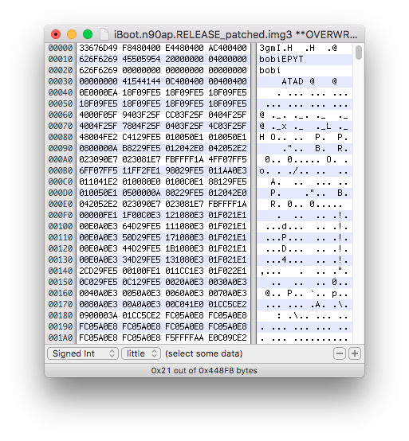
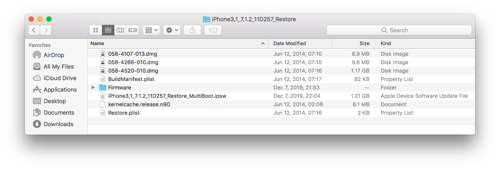

Flashing nand_firmware
In order to flash two separate bootchains in nand_firmware, we must edit current image type in the IMG3 header and also img3 TYPE tag value on additional images. This will allows parent bootloaders to properly find them.
On the following screenshot of an iBoot img3 file, image type in the IMG3 header is highlighted in purple and img3 TYPE tag value is highlighted in red.
 Here is a list of default stock img3 TYPE tags.
Here is a list of default stock img3 TYPE tags.
- applelogo.[...].img3 : logo
- recoverymode.[...].img3 : recm
- DeviceTree.[...].img3 : dtre
- iBoot.[...].img3 : ibot
Open these decrypted images in a hex editor. Locate the image type in the IMG3 header and TYPE tag value, then replace it with an unused one. Save the file with a name like the following example.
Flashing a secondary bootchain would look like this. Note that I usually use letters to identify each installed iOS install, like "B" for secondary instance, "C" for third instance, and so. I use the same rule for img3 type, like ibob for secondary iBoot, dtrb for secondary DeviceTree, and so.- applelogo.[...].img3 : logo
- recoverymode.[...].img3 : recm
- DeviceTree.[...].img3 : dtre
- iBoot.[...].img3 : ibot
- applelogoB.[...].img3 : logb
- recoverymodeB.[...].img3 : recb
- DeviceTreeB.[...].img3 : dtrb 
- iBootB.[...].img3 : ibob 
Secondary LLB images will be passed to kloader from userland, so we don't have to flash them in nand_firmware.
Important limitation:
The nand_firmware partition is currently limited in size. If size of images to flash is over than the nand_firmware partition capacity, the restore process will not return an error, but several images will be missing.
If you need multiple distinct iOS bootchains for your multi-boot setup, you might have to use multi_kloader which allows chainloading both first and secondary bootloaders from userland. This would avoid flashing many iBoot images, which are pretty huge, into the nand_firmware.
If you are using an iPad, iBoot can be directly passed to kloader. I don't know exactly why, but iBoot seems to do some LLB stuff on iPads. This will allow you to save space on the nand_firmware for DeviceTree images and boot logos.
You should have the following files in the "Patched" folder of each secondary iOS systems you plan to install, where [x] represents the letter used to identify the OS instance.
- LLB[x].[...].bin
- iBoot[x].[...].img3
- applelogo[x].[...].img3
- recoverymode[x].[...].img3
- DeviceTree[x].[...].img3
Be sure every filenames present in the manifest file have a file named same in the all_flash folder, otherwise the restore process will error. Filenames must also contains some recognized patterns, such as "applelogo", "recoverymode", "DeviceTree", "iBoot". Files with a different name might make the restore process fail.
Step 9) Preparing firmware for restore Repack the firmware into a .ipsw file using zip.  Then, restore it using iDeviceRestore. Do not use iTunes, because it won't flash the additional images as I seen back in the days.
pmbonneau-mac#pmbonneau-mac#idevicerestore –e iPhone3,1_7.1.2_11D257_Restore_multiboot.ipsw
You can see in iDeviceRestore console that additional images has been took in consideration by the restore process if you see like on this screenshot. If something fails, restore process will return an error and device will reboot in recovery mode. Correct the issue and retry. Otherwise, device will boot correctly to main OS setup.